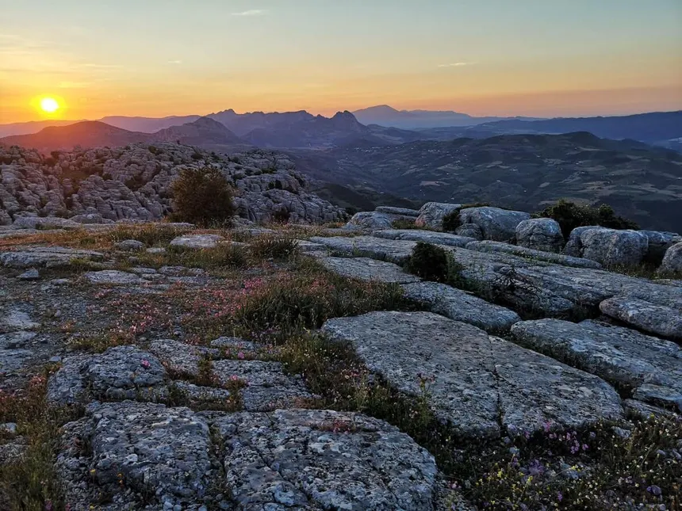
Amanecer en el Torcal
Formaciones kársticas únicas en Europa, Patrimonio de la Humanidad.
Una inmersión fotográfica en los paisajes más espectaculares de Málaga
A continuación, presentamos una selección de más de 15 instantáneas que capturan la esencia de nuestras sierras, ríos y senderos técnicos. Esta galería está estructurada mediante un *grid* de CSS3 para garantizar una visualización óptima.

Formaciones kársticas únicas en Europa, Patrimonio de la Humanidad.
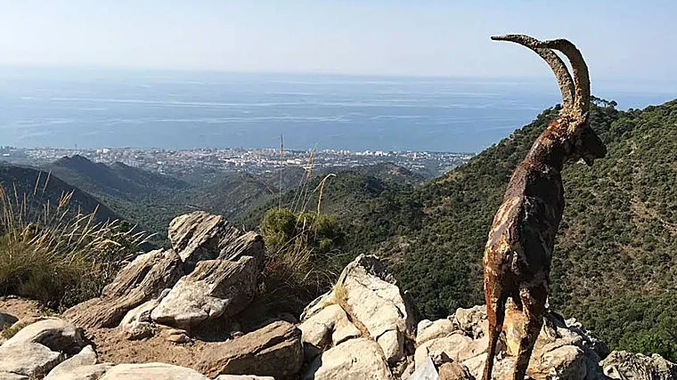
Punto de partida clásico para la ascensión a la Concha.
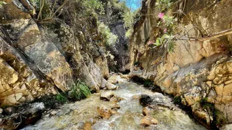
Ruta acuática mítica en Nerja, ideal para el verano.
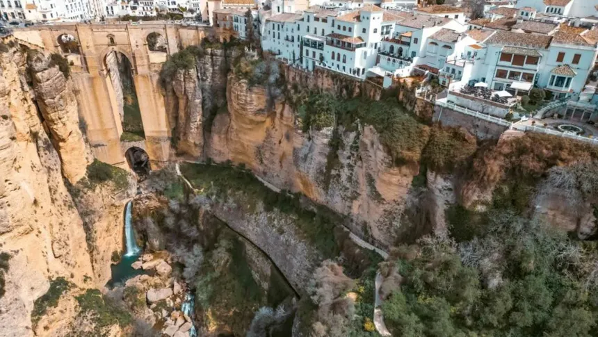
Vistas impresionantes del Puente Nuevo y el cortado calizo.
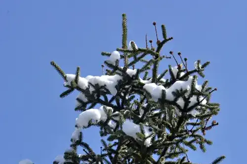
Estampa invernal única en la Sierra de las Nieves.
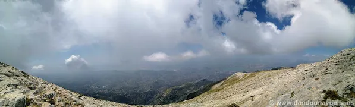
Tocando el techo de Málaga, en la Sierra de Tejeda.
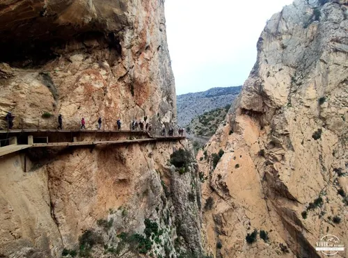
Ingeniería y vértigo en el Desfiladero de los Gaitanes.
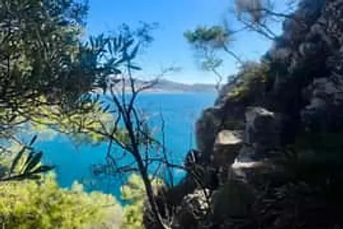
Senderismo costero en los Acantilados de Maro-Cerro Gordo.
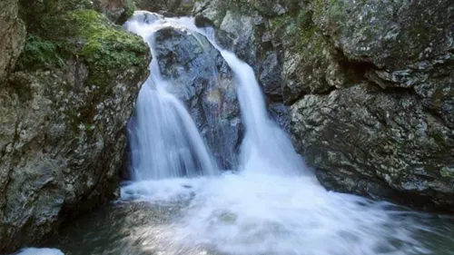
Pequeñas cascadas ocultas en la Sierra de la Axarquía.
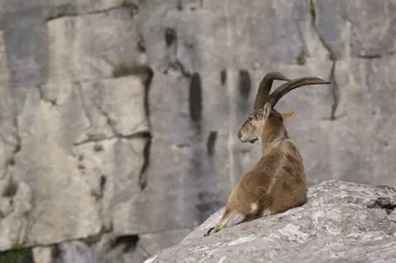
Ejemplar macho de *Capra pyrenaica* en su hábitat.
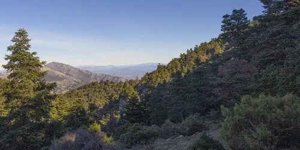
Uno de los bosques de pinsapos más extensos del mundo.
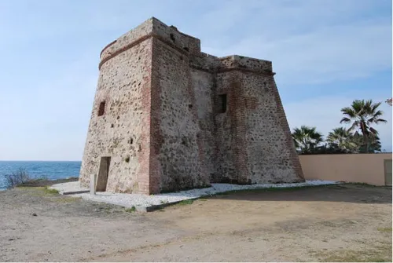
Historia y senderismo a lo largo de la Senda Litoral.
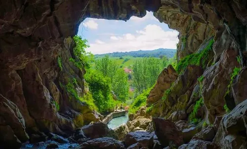
Salida del sistema espeleológico Hundidero-Gato.
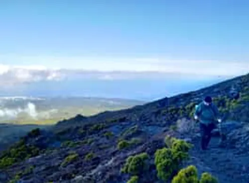
Ruta exigente en Nerja con vistas panorámicas.
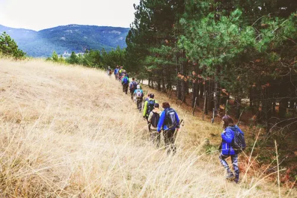
Compartiendo la pasión por la montaña malagueña.